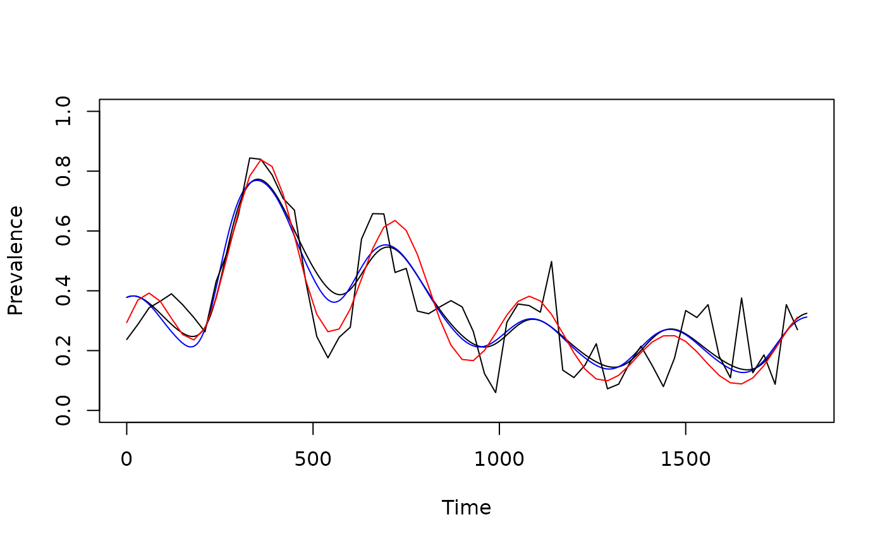

History.RmdIn malaria, the immune status of the population depends on the
history of exposure. Here, we develop a method to estimate the history
of exposure from a time series describing the PfPR in a
population over time. The algorithm is called
pr2eir_history that fits the signal.
Make an initial guess about the average annual EIR.
Set initial conditions for the model to the steady state using the average EIR from the first six months of data.
Choose a function family, and fit the seasonal pattern:
Given an initial seasonality pattern, fit the phase.
Fit the amplitude.
Fit a spline function to describe inter-annual variability.
At this point, the model should be reasonably close to the data, but we might want to adjust:
Refit the average annual EIR
Refit the phase
Refit the amplitude
Refit the trend
Return a model, fitted to the data
set.seed(127)
F_s1 <- make_function(makepar_F_sin(bottom=1))
F_t1 <- make_function(makepar_F_spline(365*(0:5), c(.7, 2, 1.5, .9, .6, .8)))
tt <- seq(0, 365*5, by = 30)
pr <- .28*F_s1(tt)*F_t1(tt)
obs_pr <- rnorm(length(tt), pr, .1)
plot(tt/365, obs_pr, type = "b", xlab = "Time (in years)", ylab = "PR", ylim = c(0,1))
lines(tt/365, pr, lwd=2) The first step is to set up the model we want to use. This uses the
default X component model, SIS, and we set
up the model using the built-in sin function family from
ramp.xds:
mod <- xds_setup_cohort(season_par = makepar_F_sin())To call the function, we pass the observed pr time series, the times, and the model:
mod1 <- pr2eir_history(obs_pr, tt, mod, twice=FALSE)## [1] 1.277772
mod2 <- pr2eir_history(obs_pr, tt, mod, twice=TRUE)We can visualize the results:
ttn = seq(-365, max(tt), length.out=600)
xds_plot_PR(mod1)
xds_plot_PR(mod2, clrs="blue", add=TRUE)
lines(tt, obs_pr, xlab = "Time (in years)", ylab = "PR")
lines(tt, pr, col = "red") 